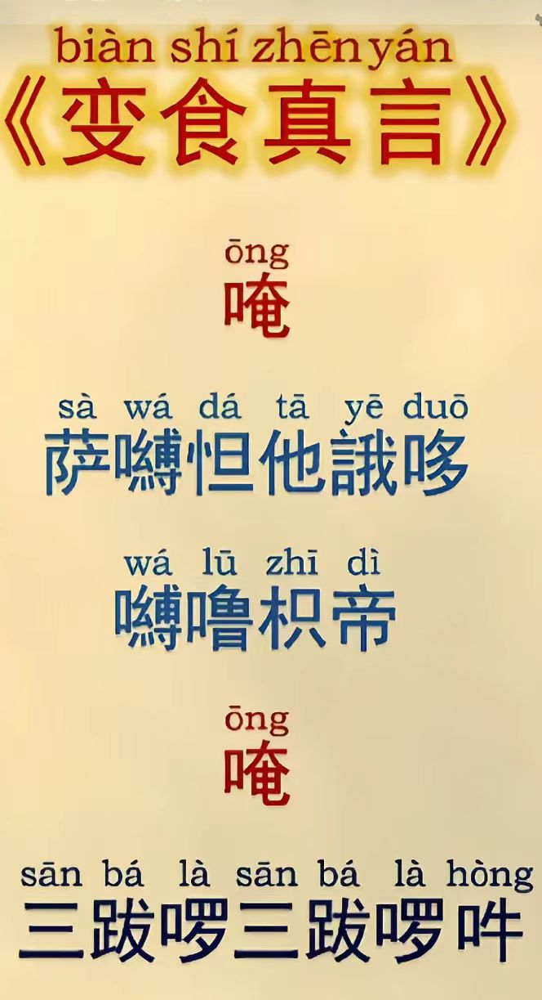

20260611祭祖方法 用品 开光咒 变亿咒
符咒术法道家风水布局 原始对话记录纸钱元宝，平时要多烧
别拿几张烧纸
供奉要重
师父，一般一次烧多少个？
买回来就烧掉吗，有什么讲究没？
有个对应关系，那边富了这边也富
那边有了，这边也有
@弘毅 心经后边咒语三遍，开光啊
元宝用具都要开
然后学会化亿咒
道家的佛家的都可以
开光后然后烧掉吗？
@红树林 一般一个小钱粮，两袋金元宝 两袋银元宝，红包袱十个，蓝包袱十个，香
每次最少这么多
房子隔几年烧一套
衣服一般一年一身
@弘毅 是啊，开光后，念变化咒，烧过去
有变化咒怎么念[呲牙]
直接搜佛家那个变亿咒
好的。谢谢师父[合十]
变亿咒（加倍加持咒）
一、标准全文与读音（汉地通用版）
咒语汉字：
唵 三拔惹 三拔惹 波玛纳萨惹 嘛哈藏巴巴 吽 帕得莎哈
标准注音：
wèng sān bá rà sān bá rà bō mǎ nà sà rà mā hā zàng bā bā hōng pà dé suō hā
梵文转写：Oṃ saṃbhara saṃbhara vimanasara mahājava hūṃ svāhā
藏传双句完整版（仪轨常用）
嗡 桑巴惹 桑巴惹 比嘛纳 萨惹 玛哈佳瓦 吽
嗡 斯嘛惹 斯嘛惹 比嘛纳 嘎惹 玛哈佳瓦 吽
二、出处与传承
1. 汉传：出自《回向轮经》《守护大千国土经》，名加倍咒、变亿咒
2. 藏传：源自度母传阿底峡尊者，收录于《噶当祖师问道语录》，又称加持咒，藏地各宗通用
3. 区分：勿与施食「变食咒」混淆，二者梵文、用途完全不同
三、核心功德含义
1. 功德亿倍增长：持诵后当日念佛、诵经、持咒、供佛、布施、抄经等一切善业功德放大亿倍；修法前诵3–7遍，一善等于亿善
2. 广积资粮、消障：快速积累福报资粮，清净身口意轻业障；日常持七遍，功德等同供养恒河沙诸佛
3. 供物增广：上香、供水、供花前持诵，供品功德遍满十方，利益无量众生
4. 回向增益：晚间功课结束再诵七遍回向，白天所有善根圆满加倍，回向力更强
四、简易持诵方法
1. 日常晨起：早课、念佛、抄经、行善前，恭诵7遍，全天善根皆得加倍
2. 修法/供佛前：上香、供水、做仪轨前诵3–7遍
3. 晚间收尾：当日所有功课完毕，再诵7遍配合回向，圆满一日功德
4. 祭祖/火供：扫墓、烧供、烟供前持3遍，微薄供品化作无量受用，利益先亡宗亲
五、修持要点
1. 先持变亿咒，再做善事、念佛诵经，顺序不可颠倒
2. 以恭敬信心持诵，心越诚，加倍之力越显著
3. 仅增长善功德，恶业不会因此放大，无需担心副作用
4. 诵完可直接发愿回向：回向父母安康、亡者往生、众生离苦等
补充：常见误区区分
- 变亿咒（加倍咒）：增广善功德，修持前置加持
- 变食咒：专用于施食饿鬼，化少量食物为无量甘露
- 补阙真言：功课遗漏、数量不足时补圆满，作用不同
好的，谢谢师父
念起食神咒，神咒变化轮，灵芝甘露水，滴滴下生银，道生一一生二二生三，三化十，变化千百万亿，酒化长江之水，食化米面之山，金银财宝变化无数，变化无穷大天尊
这是道家的
只要能回家的，不会超过阴宅三代

祭祖用品与开光、变亿咒的做法
一、本页是什么
这是一段围绕"怎么给祖先烧供"的对话，信息密度很高：既有祭祖用品的"标配"，也有开光、变亿咒、食神咒的具体念法。原文夹杂民俗口述与佛教咒语释文，这里分头整理。宗教咒语作为文本文化介绍，不作功效评断。
二、祭祖用品的"标配"
原记录给出的最小配置是："一个小钱粮，两袋金元宝、两袋银元宝，红包袱十个、蓝包袱十个，香"，并注明"每次最少这么多"。更新节奏上，"房子隔几年烧一套，衣服一般一年一身"。记录还强调"纸钱元宝，平时要多烧，别拿几张烧纸""供奉要重"。
| 用品 | 作用 | 频次说法 |
|---|---|---|
| 小钱粮 | 随身资粮 | 每次一套 |
| 金、银元宝 | 主供财物 | 每次各两袋起 |
| 红、蓝包袱 | 包纳供品 | 各十个起 |
| 香 | 通请 | 随供 |
| 房子 | 居所 | 隔几年一套 |
| 衣服 | 衣着 | 一年一身 |
三、开光：用具都要开
记录指出："元宝用具都要开"，开光后才烧。方法上，有一条通用做法——"心经后边咒语三遍，开光啊"，即诵《心经》后加念其咒语三遍。更具体的一版是：点一支香，边念边朝元宝画圈，念"揭谛揭谛，波罗揭谛，波罗僧揭谛，菩提萨婆诃"三遍。该咒语详见本集群《上香观想与祭祖民俗咒语辑录》。
四、变亿咒：全文与读音
原页附有变亿咒（加倍加持咒）的完整释文：
- 汉字：唵 三拔惹 三拔惹 波玛纳萨惹 嘛哈藏巴巴 吽 帕得莎哈
- 注音：wèng sān bá rà sān bá rà bō mǎ nà sà rà mā hā zàng bā bā hōng pà dé suō hā
- 梵文转写：Oṃ saṃbhara saṃbhara vimanasara mahājava hūṃ svāhā
出处：汉传出自《回向轮经》《守护大千国土经》，称加倍咒、变亿咒；藏传源自阿底峡尊者传承，收录于《噶当祖师问道语录》。原页特别提醒：勿与施食"变食咒"混淆，二者梵文与用途不同。
五、持诵要点与误区
原页列的要点是：修法前先持 3–7 遍，再做善事；上香、供水、供花前持诵；扫墓、烧供前持 3 遍；晚间功课毕再诵 7 遍回向。其说法是"先持咒、后行善，顺序不可颠倒"。原文还区分了三者：变亿咒增广功德、变食咒专用于施食、补阙真言用于补足功课。记录另附一段道家"食神咒"（如"念起食神咒，神咒变化轮……变化无穷大天尊"），属道门文本，可作对照。
六、常见问题
问：元宝不烧，可以留着吗？ 原记录主张"平时要多烧、供奉要重"。具体如何做，随各家习惯。
问：开光要念什么？ 本页给的通用做法是《心经》后咒语三遍，或以香画圈念"揭谛"咒三遍。
问：变亿咒和变食咒一样吗？ 不一样。原文明确二者梵文、用途完全不同，勿混用。
七、提醒
- 祭祖用品有"最小配置"，以元宝、包袱、香为要。
- 元宝用具先开光、再念咒焚化，是记录中的做法。
- 咒语内容作为文本文化介绍；本文不承诺任何现实功效。